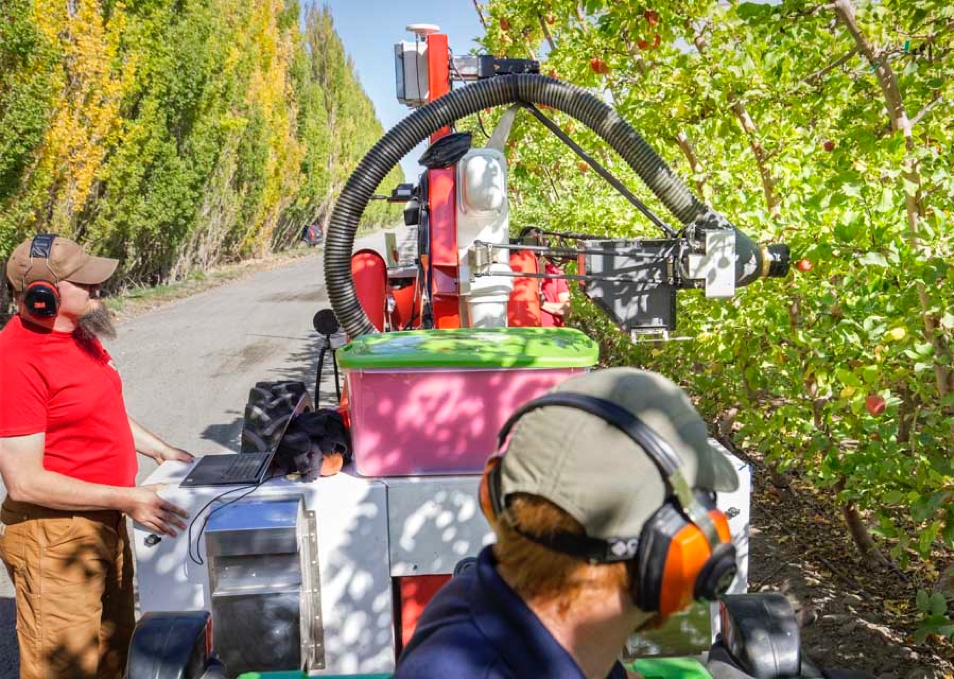

According to 2015 figures from the Bureau of Labor Statistics, fruit and tree nut farms employed, on average, 196,000 people, with about 40,000 on average working at apple orchards.
“It’s no secret we’re facing a serious labor shortage in agriculture so seeing companies devote time and funding to new technology is welcomed,” Jim Bair, President and CEO of the U.S. Apple Association told the NewsHour via email.
Operators of an Abundant Robotics automated vacuum harvester monitor the test vehicle working a Fuji apple block during the 2016 Washington apple harvest.
Abundant Robotics in California has built an automated apple picker that uses a gentle vacuum system to suck the fruit straight off of the trees after identifying ripe apples.
“The robot’s got to be able to identify an apple, and then after that, tell if it is ripe,” said Dan Swafford, an agricultural technologist at Virginia Tech. “It takes a lot of specialized sensors and cameras to do that, and then they have to be able to pick the fruit without damaging it,” he said.
Watch the Abundant Robotics video here.
“As a kid in Louisiana I was inspired by agricultural equipment such as combines, cotton pickers, and tractors,” Abundant Robotics CEO Dan Steere told the Newshour. “The work we’re doing is an extension of several hundreds of years of technology innovation for agriculture.”
For more info on fruit picking, go here.
This development looks like a paradigm changer to me after additional engineering development. There is no doubt that agricultural robotics is a wave of the future.
What do you think?